WORK・運動健康 APP
從文獻與數據出發，替未定義的目標族群設定三類具消費潛力的用戶輪廓，並提出三款不同視覺取向的設計方案，完整呈現從研究洞察到落地產出的設計脈絡。
合作對象
博晶醫電
專案時間
2020
製作時程
6天
專案類型
APP
負責內容
UI設計、設計策略
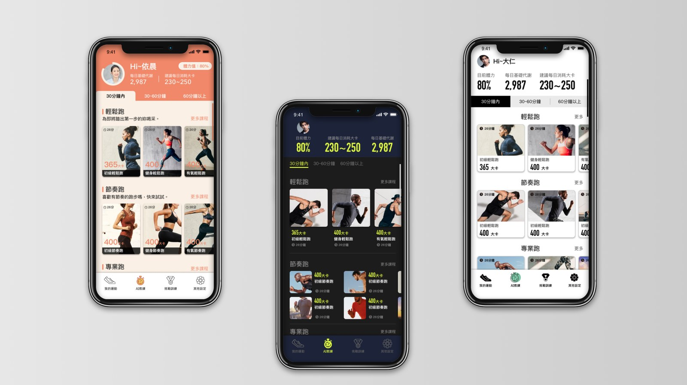
三款風格提案的介面總覽。
成果與結論
在 6 天的提案時程內，從文獻研究、目標族群假設到三款完整的視覺提案，交付一套可供產品團隊討論決策的設計方案，而非單一假設下的最終答案。
天
完整提案時程
款
完整風格提案
類
假設用戶輪廓
＊本提案為入職後針對此產品的初次設計提案；三款風格為供內部團隊討論參考之設計方向，尚未經真實用戶測試驗證。
本專案重點
本專案初期並未設定明確目標族群，因此先參考文獻與市場數據，設定三類具消費潛力、對數位產品熟悉的族群，提出三款不同取向的設計方案供初期討論。 整份簡報著重呈現脈絡與產出過程——從接到題目後如何拆解問題、設定目標，到最後的實際介面產出。
提案規劃與分析 > 時程安排
提案時程僅 6 天，因此在第一天即完成題目拆解與文獻搜集，並將目標用戶設定、色彩計畫等決策提前至第 2 天，讓後續的架構、wireframe 與 mockup 製作能有充足的時間反覆調整。
| 階段 | 工作項目 |
|---|---|
| D1 | 收到題目／基本資料研究／文獻搜集／簡報規劃 |
| D2 | 目標用戶設定／蒐集參考資料／架構規劃／訂定色彩計畫／簡報預排 |
| D3 | 架構整理／wireframe 規劃／視覺風格蒐集 |
| D4 | wireframe 上機／mockup 製作 |
| D5 | mockup 製作 |
| D6 | mockup 製作／簡報製作／預計提前交付 |
| D7 | 交付檔案 |
本專案設計流程
本提案針對追求運動健康的行動裝置用戶，以使用者研究為基礎，替博晶醫電規劃三套差異化的視覺風格方向，實現親和、專業、科技並存的產品定位；完整流程從文獻資料的收斂彙整，走到高保真視覺稿的落地產出。
文獻佐證：援引跑步相關健康研究，建立訴求立論基礎。
設計目標：收斂文獻洞察，訂定核心訴求方向。
TA輪廓：歸納三種差異化目標用戶樣貌。
資訊架構：平板 wireframe 驗證後，收斂至手機版型。
高保真提案：依風格定位產出三套視覺稿。
設計目標
安排初階計畫，
協助跑者建立運動習慣，
看見自我進步。
文獻查找
文獻與數據顯示女性運動風氣成熟、職場主力族群規律運動比例全面提升，但題目本身並未指定初階跑者的具體輪廓——這正是本次提案需要自行定義目標族群的起點。
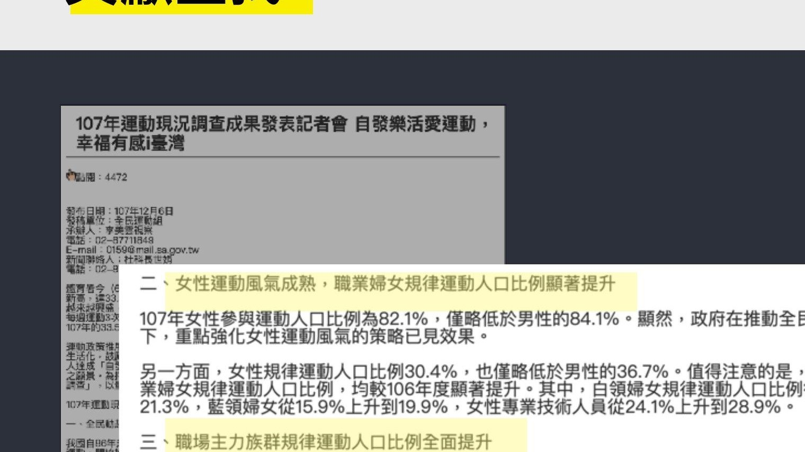
從教育部體育署的資料中可發現目前民眾運動的相關現象：如女性運動風氣成熟，職業婦女規律運動人口比例顯著提升、職場主力族群規律運動人口比例全面提升等等。從另一份調查中可發現若是以目的做切入，兩性皆以「為了健康」最高，均逾 6 成 5，其次則女性及男性分別為「為了身材」（占 18.8％）及「興趣／好玩／有趣」（占 14.2％）。
另因本次題目無設定是何種的初階使用者，針對這種情況，提案中將會參考文獻與數據，設定三類具有消費潛力及對數位產品較為熟悉的族群，並提出三款不同的設計提案，供產品團隊參考及討論。若後續確認的目標族群更具體，在風格提案上也可以做更精準的可能性延伸。
資料來源：教育部體育署《107 年運動現況調查成果發表記者會》
目標用戶設定
依據文獻推論，設定三類具消費潛力且對數位產品較為熟悉的族群，並分別標記出各自的產品調性座標（感性／理性、專業／休閒），作為後續三款風格提案的依據。
省錢、維持身材、喜愛可愛小物、健康舒壓
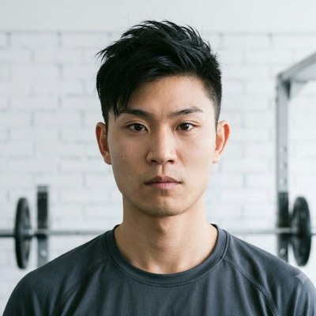
維持身材、身材想被看到、成就感、挑戰自己
喜歡質感、有品味、時尚、對自己有一定要求
產品意象－關鍵字發想
本階段收錄產品的核心意象關鍵字。後續將依據這些關鍵字與色彩計畫，發展出三款不同視覺方向的提案（風格 A／B／C），並在統一的 UI 架構限制下探索最佳體驗。
核心原則・三款風格共同基礎
無論何種風格，均基於上述統一架構發展；下列關鍵字將分化為三組提案，於後續章節結合色彩計畫呈現。
意象關鍵字池
類設計 > 功能相似的產品
繪製架構前，先參考有類似功能的數位產品介面，熟悉產品的共同視覺語彙，同時也觀察是否有可利用在自家產品上的優點特色。
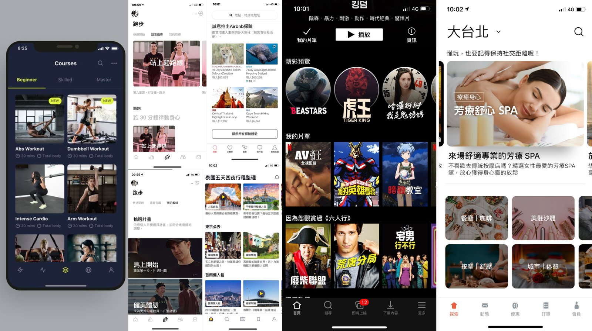
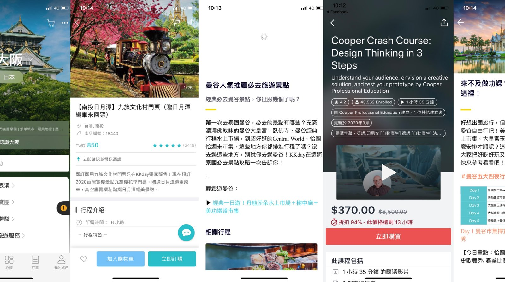
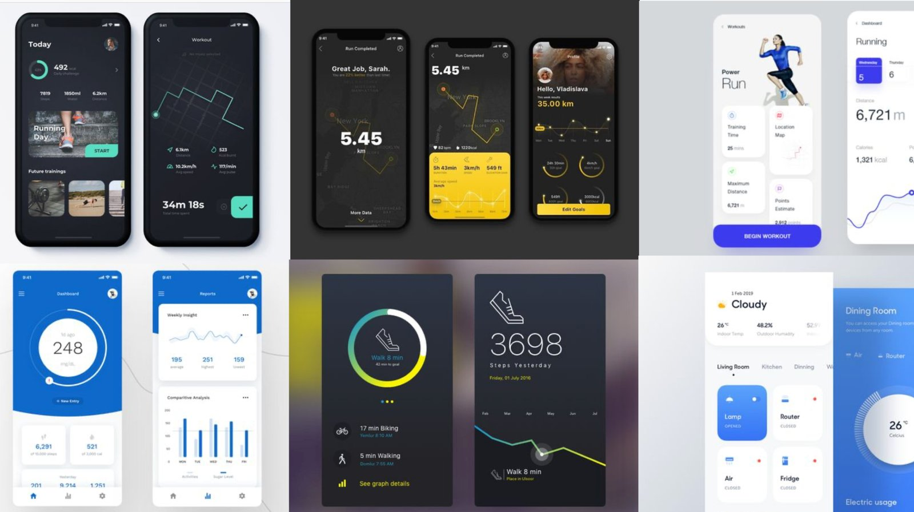
盤點資訊
以既有健身平板 App 的三個核心畫面（課程列表、課程說明、課程進行中）為對象，同步盤點資訊架構與畫面內容：先以條列方式拆解每個頁面的元件與層級，再回頭在實際畫面上標註哪些資訊需要重點呈現、哪些用戶資料與功能屬於次要或可捨去的項目，藉此釐清「數據呈現」「課程說明」「視覺資訊化」與「Call to Action」四類資訊的主從關係，作為後續延伸至 Mobile App 的資訊架構基礎。
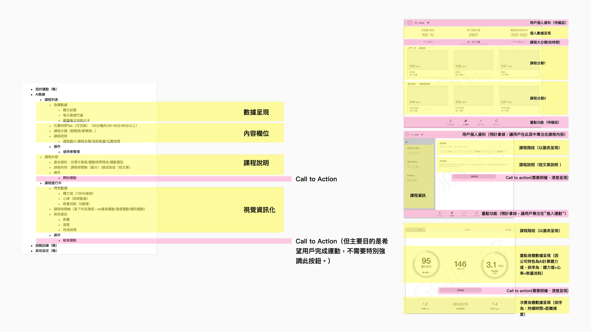
本專案重點設計
Data
◆
呈現用戶的體力狀態、每日基礎代謝與建議消耗大卡，讓用戶掌握自身數據，作為選擇課程的依據。
Guide
◆
整合課程圖片、名稱、消耗熱量與花費時間，並以目標卡路里、時間軸與達成效益，說明每個課程的內容與價值。
Visualize
◆
將體力值、心率、熱量消耗、距離與速度等即時數據以圖表呈現，讓用戶運動時能一眼掌握自身狀態。
Action
◆
「開始運動」需明確、清楚呈現；「結束運動」則主要目的是讓用戶完成運動，因此不特別強調此按鈕。
APP Wireframe（重點畫面）
將平板體驗收斂至手機端，針對小螢幕重構資訊層級，串接完整的跑步運動體驗流程。
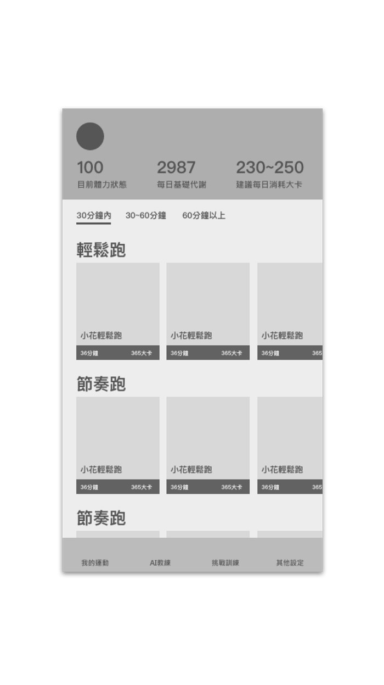
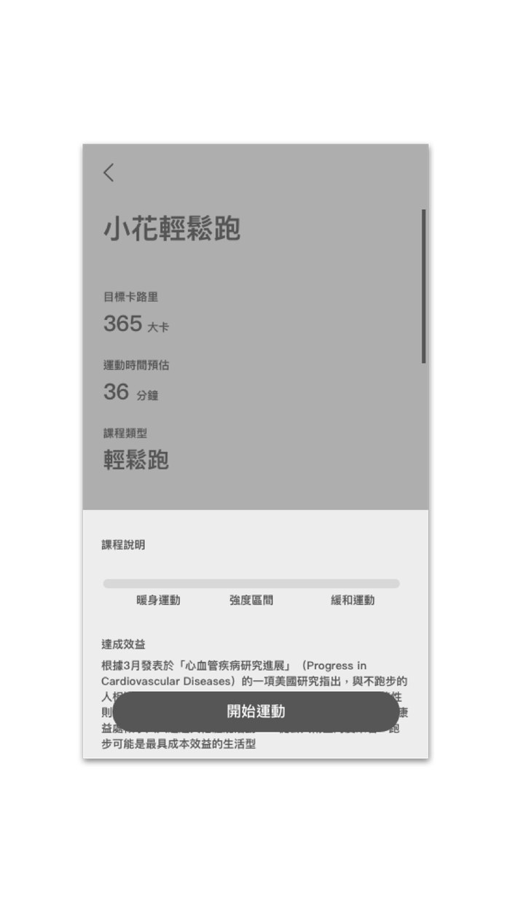
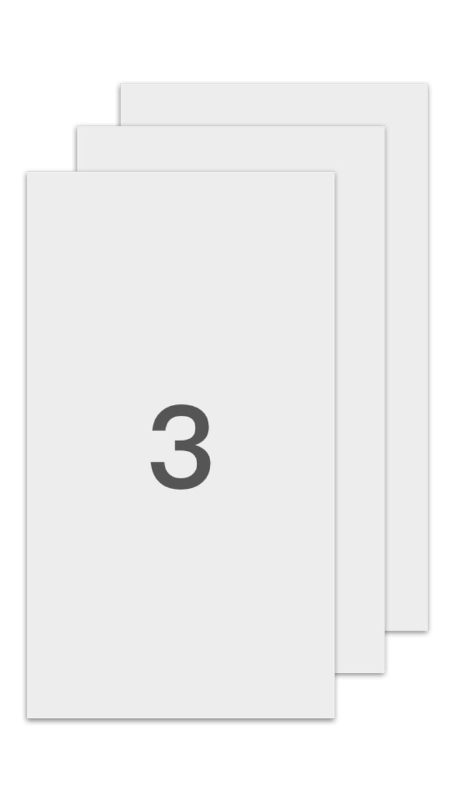
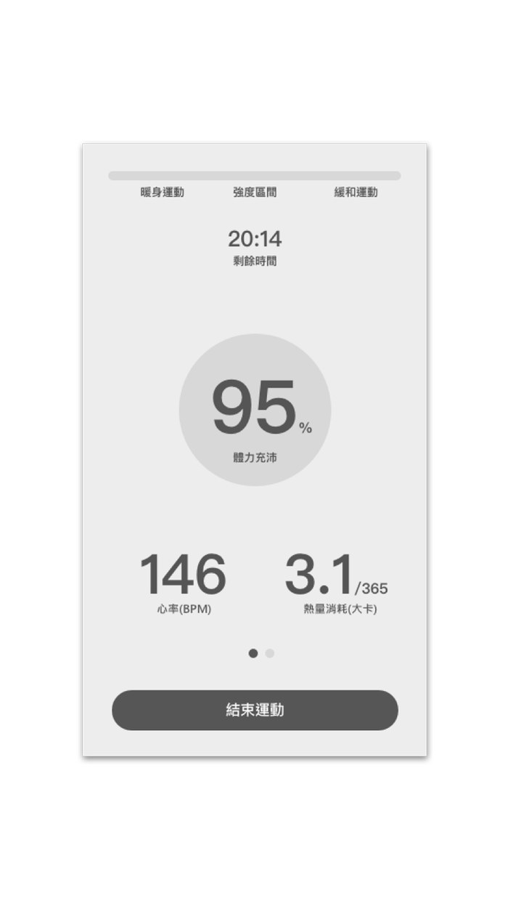
視覺風格設定
本階段奠基於相同的產品架構與功能亮點，發展出三套差異化的視覺風格，以探索不同的品牌溝通面向。
溫柔陪伴・跨出第一步的暖意
圓角較大、色彩對比柔和，強調親和力與陪伴感。
速度與科技・追求進步的成就感
高對比色系、俐落線條，展現強烈動態與數據感。
理性沉穩・值得信賴的專業感
極簡卡片設計、清晰視覺層級，強調資訊可讀性。
風格 A・小資運動女
以溫暖的珊瑚橘為主色調，強調人味、親切與柔和的形象；透過放大的個人照片、口語化的課程分類，以及置底的圓形 Call to Action，塑造陪伴初階跑者跨出第一步的溫暖夥伴感。
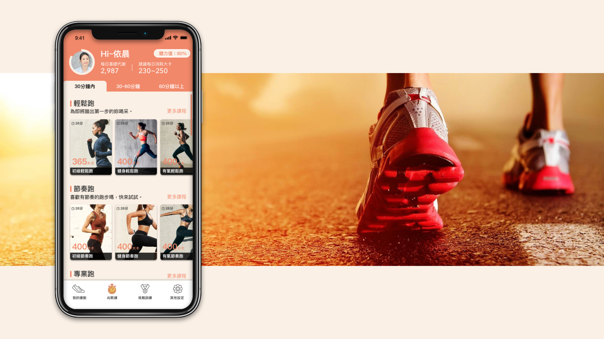
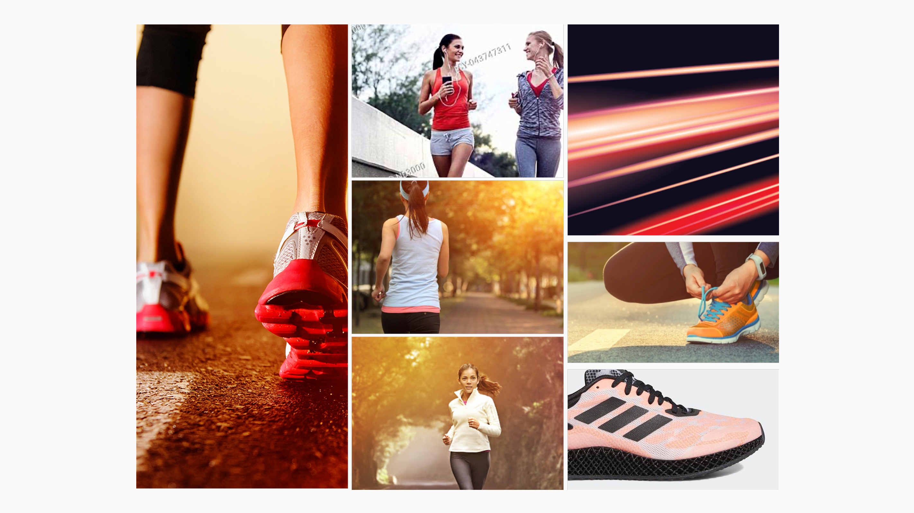
#F18869
#F9E1D9
#FAF0E6
#5786C2
#E9C863
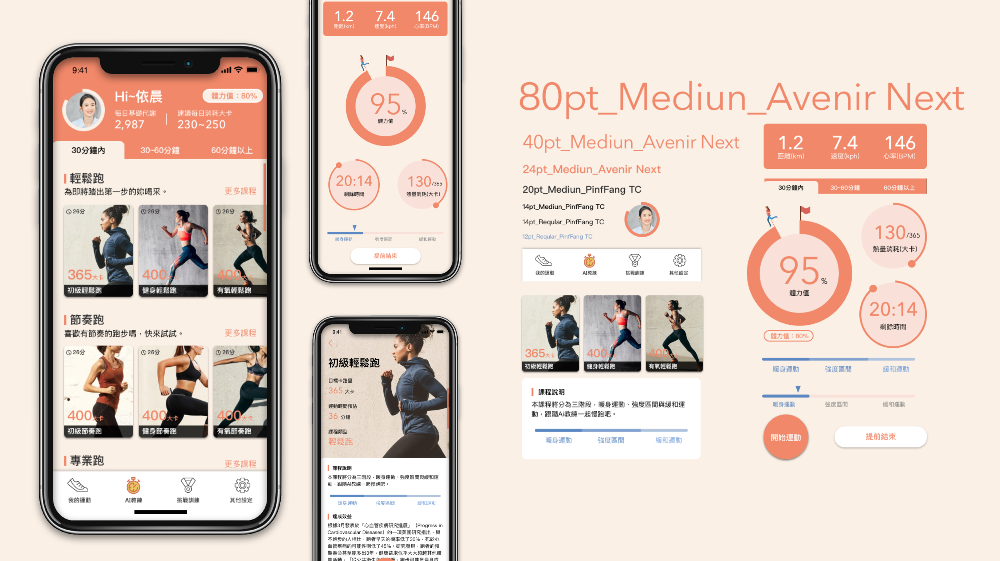
將個人照片放大，強調用戶個人，增加用戶與產品的連結感。
運動數據主從明確、位置固定，用戶能一眼鎖定自己重視的數據，加強產品易用性。
以口語化的方式描述課程分類，增加產品的親合度同時讓用戶更容易了解分類。
體力值融合動態插畫設計，增加產品的幽默感與趣味性，讓用戶每次跑步都有人陪伴。
「開始運動」按鈕置底，以圓形做設計，加強產品溫暖、和藹的形象定位。
課程列表採用大圖的方式呈現，吸引用戶開始課程，同時讓整體介面豐富。
風格 B・運動猛男
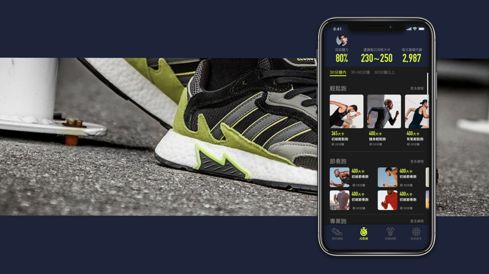
黑底搭配螢光綠的高對比配色，強調速度感與科技感；以區塊化的資訊分層、直覺化的環形體力值呈現，訴求效率與成就感，鎖定想被看見、追求進步的運動男性形象。
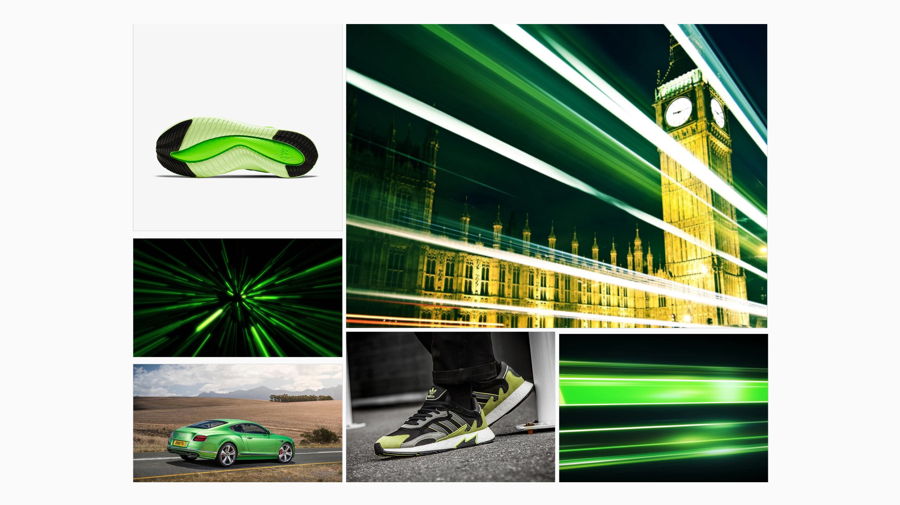
#FFFFFF
#E2FA40
#1D2339
#121729
#1C1C1C
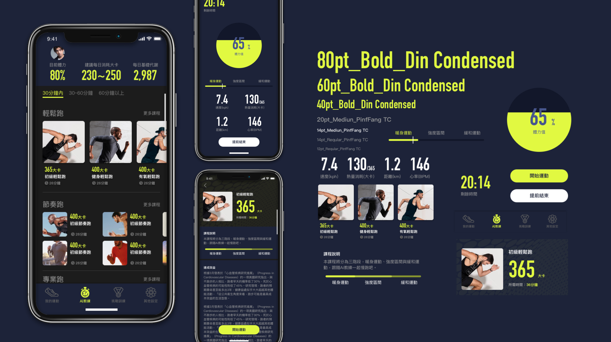
上方資訊欄位強調數據資訊呈現，同時保留用戶個人資訊入口。
區塊化設計，將大量資訊分隔明確，提升資訊閱讀性。
依照用戶特性，將用戶最在意的消耗卡路里做重點呈現，用戶可以更專注在自己重視的資訊。
Call to action 明確，用戶進入頁面後可無需閱讀資訊立刻進行動作，減少操作流程。
提供不同欄位的呈現方式，方便依照需求選擇不同版型：課程資訊量較少，但可呈現較多課程，視覺上也更豐富。
黑綠配色強調速度感，整體呈現專業、動態的產品形象。
風格 C・頂客愛健康
以黑白灰為主的高質感配色，點綴薄荷綠強調重點操作；透過置中精簡的編排與細節刻度的儀表板，呈現專業、成熟、值得信賴的產品調性，貼近重視品味與質感的族群。
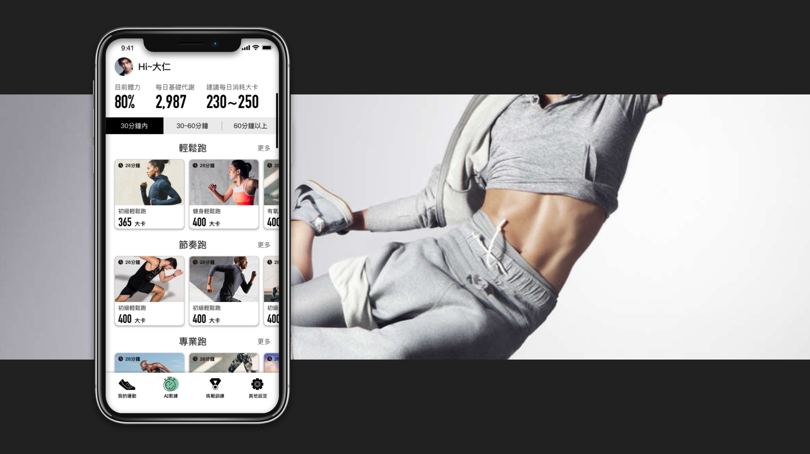
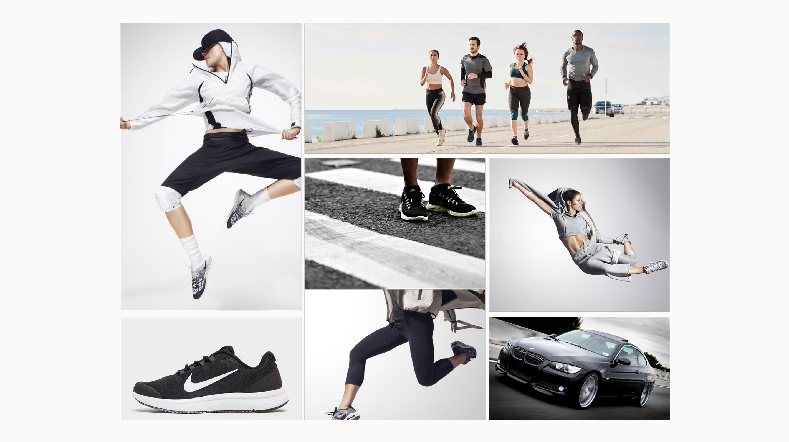
#FFFFFF
#80C7A7
#D6D6D6
#929292
#1C1C1C
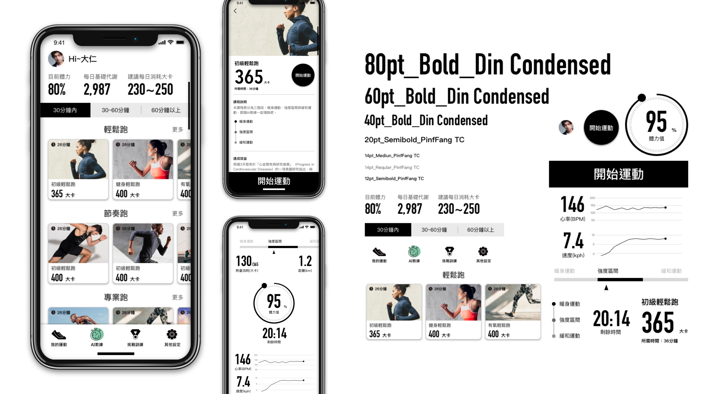
分鐘數、課程名、大卡數、圖片分開呈現，資訊更加明確。
運動區間以動態設計呈現，固定當下的時間並移動時間軸，整體更有流動感。
強調預期消耗大卡，用戶可立刻看到課程重點。
強調專業與質感，編排上選擇置中，減少不必要的資訊呈現。
加大「開始運動」按鈕，強調 Call to Action，同時更適合年紀稍長的用戶使用。
整體風格走黑白色調，重點操作以重點色強調；體力值加入細節刻度的儀表板，呈現專業穩重的視覺。
風格總覽
風格 A・小資運動女
風格 B・運動猛男
風格 C・頂客愛健康
設計心得與反思
三款風格提案目前仍停留在提案討論階段，尚未經過真實用戶驗證。本專案同時也是一次自我驗證——在有限時間內快速理解題目、定義設計核心，並完整產出可供討論的設計方案。
Ambiguity
◆
題目未定義目標族群時，設計者需要有能力用文獻與假設，快速搭建可供討論的決策基礎，而非等待完美資訊才行動。
Parallel
◆
同時發展三款風格，讓同一套資訊架構在不同調性下被檢驗，更容易分辨哪些決策只是風格偏好，哪些是不可退讓的體驗原則。
Validation
◆
三款風格目前仍是假設下的產出，下一步應收斂為一款並進行真實用戶的可用性測試，才能把假設轉化為可信的設計決策。